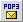

| Terme/Icône |
Nom/Texte bulle |
Action correspondante |
 | Menu onglet | Affiche l'onglet courant et le nombre de messages non lus/lus. Permet également de changer d'onglet courant. |
 | Composer un nouveau message | Permet de rédiger un nouvel E-mail. |
 | Dossiers | Permet de consulter, éditer, supprimer et créer des dossiers. |
 | Carnet d'adresses | Ouvre le carnet d'adresses en mode Edition. |
 | Configuration du filtre de mails | Permet de filtrer les E-mails en réception. |
|
 | Rapatrier mails POP3 | Effectue la réception de tout E-mail qui vous a été envoyé pendant votre session. |
 | Recherche avancée | Effectue une recherche de message détaillée. |
 | Rafraîchir | Actualise la page courante. |
 | Calendrier | Ouvre le Calendrier, pour votre prise de notes journalières. |
 | Webdisk | Ouvre l'onglet du gestionnaire de fichiers (fonction dépendante de la plate-forme). |
 | Terminal SSH | Lance l'émulateur de terminal ( <=> Telnet) Dépend de la plate-forme. |
 | Préférences utilisateur | Permet de personnaliser vos réglages. |
 | Déconnecter | Ferme votre session Open Webmail. |
 | Mettre à la poubelle | Envoie le(s) message(s) sélectionnés à la poubelle. |
 | Menu de destination | Déplace ou copie les messages sélectionnés vers le dossier indiqué. |